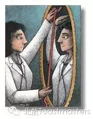
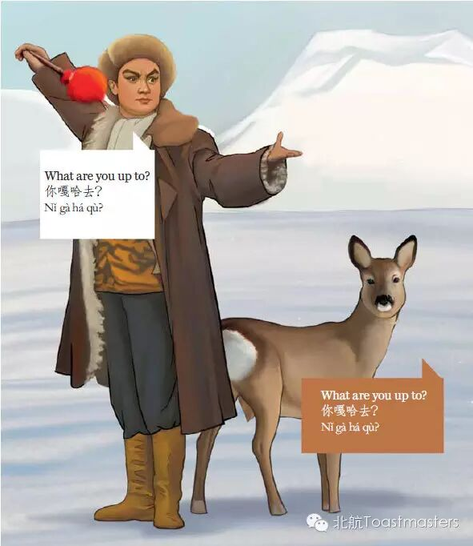

Self-evaluation
TM：Han
TTM：Maggie

Self-evaluation is one of the most important things we should learn when we are growing. When we know ourselves thoroughly, we can find the most suitable job for ourselves, we can find the best lover and all these influenced our whole life things are on the basic of knowing ourselves thoroughly. Having a good self-evaluation is a crucial factor for success. So what do you think of yourself, how can we know ourselves more objectively and deeply? Come here and let's figure out that together!
Gatsby
Just Ordinary
CC1
Gatsby, maybe you know the person in the famous movie The Great Gatsby. But our Gatsby is as good as that one. He wants to share some funny stories in his life and make you know him better. So come here and make friends with our handsome boy Gatsby!
Bean
Preserving and Developing: Chinese dialects
CC2

As the most population country in the world, China has hundreds of different dialects. The official language is "Putong Hua’"and everyone is supposed to use it in our daily life. So various dialects have a difficult situation. Bean will give us a professional view about the dialects’ preserving and developing.
Toastmasters International (TI) is a nonprofit educational organization that operates clubs worldwide for the purpose of helping members improve their communication, public speaking, and leadership skills.

https://mp.weixin.qq.com/s/nLNvebouyWD9mcO1WHa9Tg
本页为抢救式本地归档，图文已永久保存。